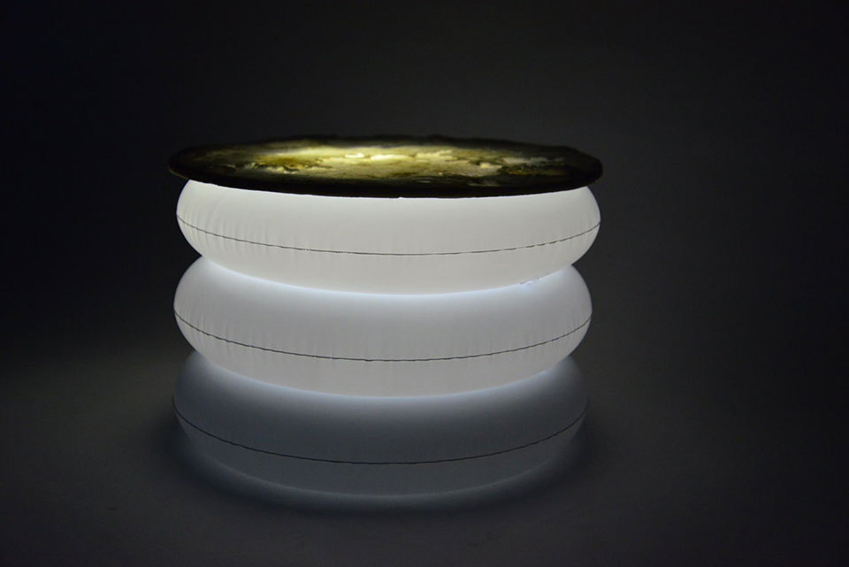

MOON SO-BAN
Personal Work, 2017
DESCRIPTION
Moon so-ban is a camping so-ban. So-ban is a Korean traditional table that is similar to a coffee table. Moon so-ban expresses moon shining in the night sky.
Moon so-ban has been modified so that is suitable for camping; you can control the height and use it as a night light

NIGHT

MORNING
DESIGN BRIEF
Sometimes, a small table to put food and drinks on for a picnic is useful. However, to take a table to a picnic would be difficult and inefficient.
Kim Min Young is a designer who takes convenience into consideration. She wanted to design a table that would approach this issue and solve it in a artistic style.
Such table would need to be portable and convenient to use. Min young also had the idea to make it into a night light to light up the dark during camping.
Moon So-Ban is the creation of Min Young's ideas. To make such table possible, the base of the table was made with a PVC tube that could easily be inflated and deflated. This allows the table to be compact and portable, but also allows the user to control the height by the amount of air. There is also a hole that allows Moon So-Ban to be used as a night light with an external light source.